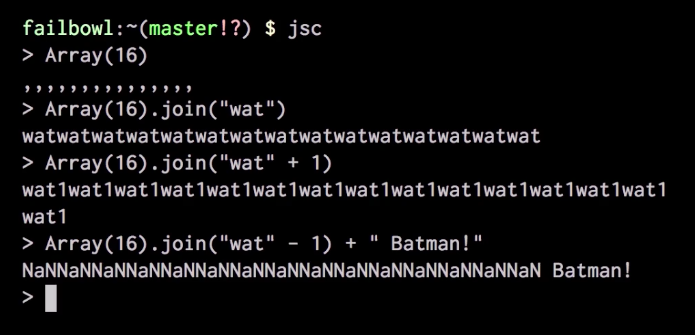

CressInt
…what makes a web-based analysis tool tick
Weirauch Transcription Factor Research Lab
Center for Autoimmune Genomics and Etiology
Cincinnati Children's Hospital Medical Center
slides: tf.cchmc.org/s/fosem2016
The Horrors
…of building a web-based analysis tool on top of legacy Perl code
or, What Happens When All the Graduate Students You Had Working on a Project Critical to Your Lab Graduate but the New Guy Says He Knows 'Some Web Stuff'
About Your Presenter
Computer Science Undergraduate
at the University of
Cincinnati
minoring in Anthropology
- not a doctor, not even on TV
- a "generalist"
- find joy in working on things that are hopelessly broken
- take correction well
The Weirauch Lab
The Weirauch Lab Studies mechanisms of gene transcriptional regulation, with a focus on transcription factors
and how they relate to the origins of diseases in humans (e.g., systemic lupus erythematosus)
We are between 3 and 8 people, depending on the season
Probing the boundaries of human knowledge


CressInt
A genomics coordinate intersection tool for plant biologists
- Manuscript in Sep 2015 Current Plant Biology
-
Built on code base of two existing analysis tools
- BedIntersector (Weirauch Lab)
- SNPsea (Broad Inst.)
- CressInt accepts BED format coordinates or gene names (FASTA input still in progress)
- Intersects input coordinates with several dozen data sets to identify "regions of interest"
"Regions of Interest"
CressInt incorporates a variety of genome-wide data types relevant to gene regulation, including transcription factor (TF) binding site models, ChIP-seq, DNase-seq, eQTLs, and GWAS.
Use cases
- Identify TFs binding to the promoter of a gene of interest;
- identify genetic variants that are likely to impact TF binding based on a ChIP-seq dataset;
- identify specific TFs whose binding might be impacted by phenotype-associated variants.
Source: CressInt FAQ
BED file format
Tab-delimited format which describes locations within chromosomes of regions of interest.
chr1 11873 14409 uc001aaa.3 0
Specification describes up to 6 columns (BED6):
chr, start, stop, label, score, and strand (+/-)
Application Design
CressInt was developed continuously Mar - Apr 2015, with another large burst in
August around the time of final
exams :(

Hey boss, should I <long-winded description of some trivial problem, one workable solution, and three unworkable ones>?
Do it. (send)
Basic Application Architecture
+ - - - - - - - - - - + +----------------------+ +----------------------+
| +----\ | | |
| Web user | | | \-------+ | +----------------------+
interface | | | | | |
| | | |/var/www/html| | +----------------------+
+-------------+ | | | | +----->| LSF (HPC cluster) |
| | | | | +-------------+ | | +----------------------+
+-------------+ | +------------+ | | | |
| +-------------+ | | | | | | +----------------------+
| | +--+---->| Perl CGI |---+-+ | . |
| +-------------+ | | | | | | | . |
+--------+ | | +------------+ | | . |
| | Submit |---+----+ | | +----------------------+
+--------+ +----------------------+
| | +---| FastCGI / PHP +---+
- - - - - - - - - - - | +----------------------+ | +----------------------+
^ | | Apache 2.2 | | | |
| | +----------------------+ +--->| MySQL 5.x |
+--------------+ | | | |
| CentOS 6 (OS) | +----------------------+
| | | CentOS |
+----------------------+ +----------------------+
Why (on Earth) Perl and PHP?
- Lab history / tribal knowledge
- Perl + CGI.pm = simple forms processing
- PHP → HTML relatively straightforward
- Desire to leave behind something maintainable by the next intern / grad student
Perl
#!/usr/bin/env perl
$"x=$%="@ARGV";$~=$;='( +)';while($%>>$:++){if($"=~/$~$/^$"=~/$;$/){$
|=$?=$:>2||die"prime\n";eval"print length(\$$?)".($:>++$?&&"/length(\$
$?).'*'")while$:>$?;die$/}$;=$~;$~=~s~.*~^($&\\1+)~;$~=~s;\d+;1+$&;eg}
Perl can look like line noise.
The object system was bolted-on as an afterthought.
At least the Perl language is not a moving target.
But a single Perl CGI cannot handle 1000s of requests per second
Source: perlmonks.orgPHP (sigh)
<?php
// Loop infinitely and fill up '/' with a 5 GB Apache access_log
$fh = fopen("doesntexist.txt", "r");
while (!feof($fh)) echo "TURTLES!\n";
?>
TURTLES!
PHP Warning: feof() expects parameter 1 to be resource, boolean [...]
TURTLES!
PHP Warning: feof() expects parameter 1 to be resource, boolean [...]
TURTLES!
PHP Warning: feof() expects parameter 1 to be resource, boolean [...]
TURTLES!
PHP Warning: feof() expects parameter 1 to be resource, boolean [...]
TURTLES!^C
feof() returns TRUE if the file pointer is
at EOF or an error occurs (including socket timeout);
otherwise returns FALSE.
feof()
JavaScript

JavaScript (sigh)
 Source: Gary Bernhardt's "WAT" lightning talkPlumbing
Plumbing (cont'd)
- Form inputs are submitted to a Perl CGI
- also async, using JavaScript - so what?
- form inputs validated by HTTP response from the CGI script
- Perl CGI submits job to HPC cluster on behalf of the user
- Results page refreshes continuously until job is done
- PHP + Twig templates again used to render (tabular) results
Let's Explore
- Web browser loads a web page
- Expand-o-sections (CSS animation)
- JavaScript click event that sets a cookie
- Live search for gene names
- Ajax (async) job submission
- Submitting a job to LSF (HPC cluster)
- Refreshing results page until cluster job is done
Lessons Learned
- Life is tough for a brand new PI, in
a new lab
- Enforcing, for example, coding standards
- Maintaining continuity on long-term projects
- Having to say "no"
-
Strive to make yourself dispensable
- self-generating documentation w/ Doxygen; wikis
- Automate
- Try to avoid shiny things
Future Directions
- Unit testing and uptime monitoring
- Stop wondering: Is CressInt broken today?
- and: Will the changes in this library break X?
- Logging & "analytics"
- Pay attention to how users are using the system and where failures happen
- Authentication, private saved jobs
- More efficient parallelization
- LSF job arrays
- GNU Parallel (youtube.com)
- Client / server architecture to handle incoming requests
- Command-line management (housekeeping) tools
Future Directions (cont'd)
Improved application architecture:
dispatch requests to a queue runner
- Rate limiting / throttling based on user "class"
- Cluster balance monitoring
- REST API for monitoring job status
- Email notifications
Credits
The Team
- Dr. Matthew Weirauch - Principal Investigator
- Dr. Xiaoting Chen - Lead Programmer / Analyst
- Kevin Ernst - developer / sysadmin
- Frances Soman - code contributor
- Dr. Michael Borowczak - BedInt author; technical advisor
Credits (cont'd)
Images
- Flickr user blueridgekitties
- Flickr user Science and Plants for Schools
- Institut national de la recherche agronomique (INRA)
- Wikimedia Commons
Links
- CressInt public web site
- CressInt manuscript - Current Plant Biology, Sep 2015
- Weirauch Lab
- Center for Autoimmune Genomics and Etiology
- Children's Hospital Medical Center (research home page)
END(LICH)
vielen Dank für Ihre Zeit
und freundliche Aufmerksamkeit
;)